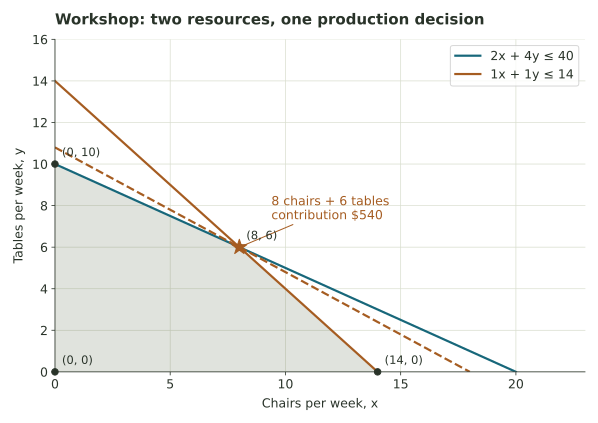

Make the most of a limited workshop.
Translate wood and assembly limits into feasible plans, compare their contributions, and explain what changes when resources or values change.
Chairs, tables, and two shared resources
A workshop makes chairs and tables each week. Let x be the number of chairs and y the number of tables. Each chair needs 2 wood units and each table 4. There are at most 40 wood units. Each item also occupies one standard assembly slot; 14 slots are available.
After per-item costs, each chair contributes $30 and each table $50. Let P=30x+50y be total contribution toward profit. Any unchanged weekly overhead would be subtracted afterward; it would not change the best production mix. All amounts are invented for this teaching model.
| Resource or value | Per chair | Per table | Available / goal |
|---|---|---|---|
| Wood | 2 units | 4 units | 40 units |
| Assembly | 1 slot | 1 slot | 14 slots |
| Contribution | $30 | $50 | Maximize total contribution |
Chairs and tables must be whole, but we first draw the continuous region. Its best point will be whole-numbered in the original model, allowing a direct recommendation.

Find the polygon before choosing a plan
Divide the wood inequality by 2 to get the equivalent x+2y≤20. Its intercepts describe the wood boundary alone. The assembly condition may cut off an intercept, so check both limits when listing the actual vertices.
A full wood allowance does not excuse an assembly violation
Plan A makes (8,5): eight chairs and five tables. Plan B makes (10,5). Calculate both resource totals for each. Every requirement must hold.
Plan A: (8,5)
Plan B: (10,5)
Largest contribution per item is not the whole answer
Tables contribute more per item, but each needs twice the wood. Chairs use less wood but occupy the same slot. With two resource limits, neither “make only the higher-value item” nor a single resource ratio automatically determines the best mix.
Does the same plan remain best?
The questions above all use the original model. Now inspect hypothetical changes. Each menu choice states exactly what changes; the other assumptions remain as given.
Separate a change in resources from a change in the goal’s coefficients. A resource change can alter the feasible polygon; a value change alters the score assigned to plans in the same polygon.
Your recommendation to the workshop
For the original model, recommend a production plan and state its contribution. Support it with two pieces of evidence: resource use and comparison with another feasible plan. Then name one assumption the owner should investigate, such as actual demand, variable production times, waste, or uncertain material availability.
A strong memo reports the plan and score separately, explains why it is feasible, and distinguishes the model’s optimum from evidence about a real workshop.